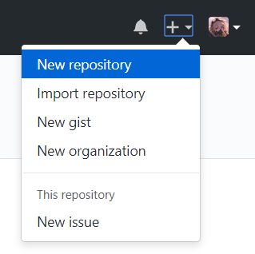
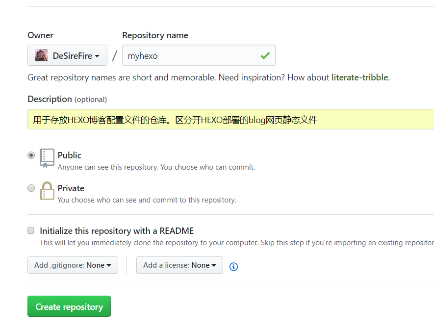
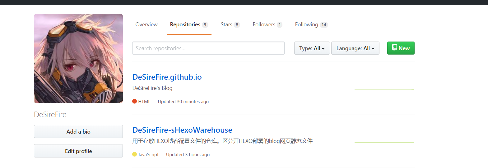
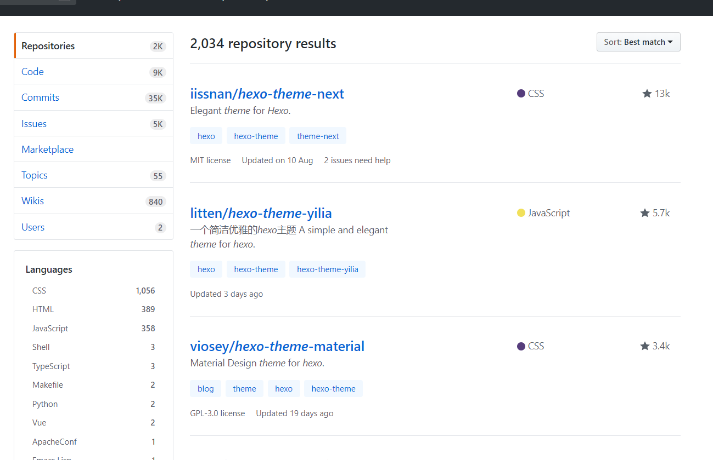
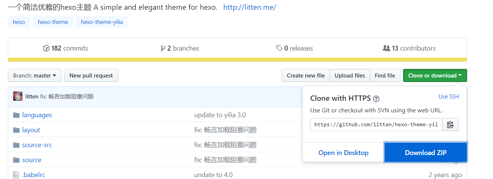
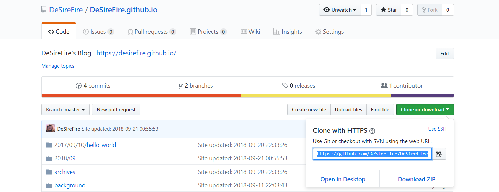
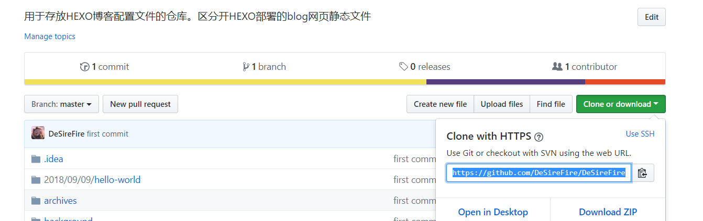
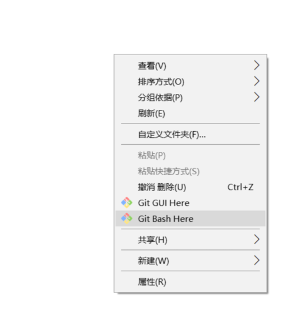
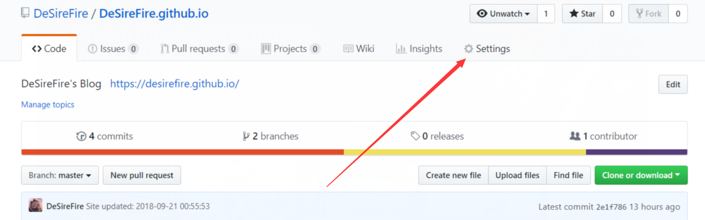
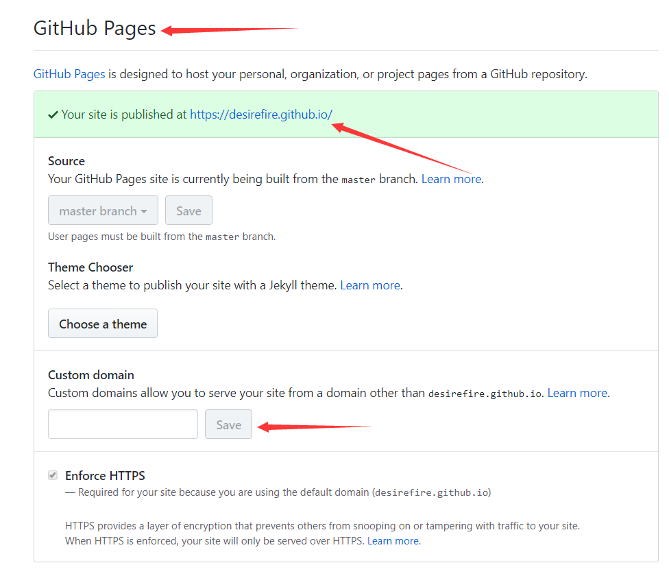

网上查的同类教程有不少，但是看了一下发布时间，那些教程的发布还是有些年头的了。
有些教程中的步骤现在不一定适用了，我当初就按照别人的教程搭建Hexo,不小心就掉了坑。
那就干脆自己写一个，方便记忆，顺便给需要的朋友提供参考。
首先报上一波，我开发的运行环境
运行环境 Runtime environment
1 | 操作系统 ： Windows10 |
背景
个人博客，一般来说，基本都是咱们干IT的人用得多一些。
要是从事这行业之外的人，根本也不需要吧。QQ空间，微博，微信朋友圈之类的地方就基本能够满足需求了。
受到了知乎上，一个讨论的问题的启发。如何开始写技术博客，怎么选择？
所以打算自己搭建博客，自己用的东西，当然是讲究一个“顺自己心意”就好。
为了尽可能写得详细，所以教程显得很冗长，但是Hexo搭建博客真的很容易..
优势
为什么选择Hexo+Github来搭建自己的博客？
我认为有以下几点优势：
- 不需要服务器，Github免费提供的托管服务；
- 不需要域名，Github同样提供了一个.io的域名；
- 不用将太多的心思投入到博客开发；
- hexo主题多样且免费、又好看；
- 不像其他博客有让人心烦的广告；
- 便于维护更新，换风格直接换模板就行。
总体步骤概述
大体的就4个步骤，咱就不弄那么复杂了。
搭建流程
准备阶段
- 下载安装相关工具
1.下载NodeJs
点击此处NodeJs中文下载页根据自己的操作系统，下载对应版本的NodeJs。
这里是推荐使用长期维护版本（LTS）的NodeJs,
如果你看不懂，从我这里下载也一样，但是版本就可能不是最新的了，这里版本v8.12.0。
Windows系统：
64位：NodeJs_x64
32位：NodeJs_x86
Linux系统：（你都会Linux了，不会选不太可能吧？）
64位：NodeJs_x64
32位：NodeJs_x86
macOS系统：
没用过，不知道。
2.安装Git
点击Git根据自己的操作系统，下载对应版本的Git 。
如果你看不懂，从我这里下载也一样，但是版本就可能不是最新的了，这里版本v2.19.0。
Window系统：
64位：Git_x64
32位：git_x86
Linux系统：
详见安装命令
下载完成以后，打开根据提示操作，Win系统直接“下一步”就OK了。
3.测试安装是否已经生效
打开cmd命令行(win+r 输入cmd回车)分别执行（Linux系统则是在终端中）复制以下命令：
node -v
npm -v
git --version
回车，稍微等下便会有以下运行结果：
C:\Users\DeSireFire>node -v
v8.11.4
C:\Users\DeSireFire>npm -v
5.6.0
C:\Users\DeSireFire>git --version
git version 2.18.0.windows.1
说明安装成功了。
https://hexo.io/zh-cn/
从Hexo 官网中可以看到这些指令，咱就以人家官网的步骤行事准没错。
打开cmd命令行(win+r 输入cmd回车)分别执行（Linux系统则是在终端中），通过cd指令跳转到要存储Hexo的位置。
如果不想琢磨，我直接写完全部指令，路径我放在D盘上（以Windows系统为例）
d:
npm install hexo-cli -g
hexo init blog
cd blog
npm install
hexo server
以上命令的意思是：
- 跳转到D盘
- 使用npm安装hexo
- 使用hexo初始化一个名为blog的项目
- 跳转到生成出的blog文件夹里
- hexo启动服务器
如果没有出错，一般会是以下情景：
此时访问Hexo测试服即可。如果出错请严格按照步骤检查！INFO Start processing INFO Hexo is running at http://localhost:4000 . Press Ctrl+C to stop.
打开浏览器输入 http://localhost:4000 就能看到搭建好的Hexo本地博客了。
不过因为没有使用其他主题，所以Hexo会是用自带的默认Blog主题。
测试完毕记得在命令窗口上按 Ctrl+C 关闭hexo服务器。
- 创建Github仓库
注意：
1.在这里，我的做法是创建两个仓库！
2.一个仓库用于存放hexo的配置文件；
3.另一个仓库用于部署Blog的静态文件！
- 点击Github进入Github,登陆！（如果没有账号，自行百度一下注册方法）
- 依照图中的位置创建仓库，如图所示：
 - 在Repository name中输入你要创建的仓库名字，这里我命名为“myhexo”,在Description输入仓库的描述，如图：
 - 其他的，根据自己需要来设定。最后单击Create repository来完成最后确定创建。
- 再创建第二个仓库，重复以上1~4的步骤，这一次在Repository name中输入dafanshu.github.io（xxx为你的想起的博客名，自行修改,但是必须与你的github用户名一致！）
完成以上五步，那么在你的github首页就能看到这两个仓库了。如图：

以“.github.io”结尾的为博客仓库，另一个是hexo配置文件仓库。
- 美化Hexo主题（拓展）
点击按钮访问Hexo主题搜索，在里面随便挑。

一般主题的开发者都会在其仓库下方放上主题效果的预览图。
这里，作为举例，选择了 https://github.com/litten/hexo-theme-yilia 主题。
下载方法，如图所示：

下载完成后，解压得到一个名为“hexo-theme-yilia-master”的文件夹，这里我把它改名为“yilia”。
最后，把它复制到D:\Blog\themes\文件夹下，主题安装就此完成。
配置文件方面，之后会讲到。
使用阶段
下载、安装完相关工具，创建完相应的两个仓库，那么就开始进入重要的阶段。
修改Hexo配置文件
1.打开blog/_config.yml，参考实例进行修改
# Site
title: 网站标题
subtitle: 副标题
description: 个人签名
author: 姓名
language: zh-Hans
timezone:
需要注意的是：
- 所有的配置“:”符号后面都要带空格，否则失效。
- language是设置语言。zh-Hans是中文，若出现乱码需转码UTF8。
2.配置发布blog的仓库地址
如何获得github的地址呢？如图：

注意，这里提到的仓库是用以“.github.io”结尾的用于部署Blog的仓库
将图中选中的部分复制下来，然后如示例中，写入_config.yml
deploy:
type: git
repo: https://github.com/DeSireFire/DeSireFire.github.io.git
branch: master
以上这步非常重要，它关系到你最终能不能部署成功！
内容较多建议参考官方文档
https://hexo.io/zh-cn/docs/configuration.html
修改完之后，可以重新执行hexo s在浏览器查看效果。并确认无误，包括以后需要添加文章，或者更新主题等，都建议先在本地查看无误再远程部署。
根_config.yml文件中。
3.配置主题到配置文件
# Extensions
## Plugins: https://hexo.io/plugins/
## Themes: https://hexo.io/themes/
theme: yilia
需要注意的是：
- theme名必须与D:\Blog\themes\下的文件夹名一致。
4.配置用于存放hexo文件的仓库地址
首先，进入Github,找到之前创建来用于存放hexo的配置文件的仓库“myhexo”，如图：

复制仓库地址，然后在D:\Blog\目录下，然后如图中打开gitbash（如果你是Linux系统，直接在相应目录下打开终端即可）：

在之后出现的黑窗口中输入一下命令，注意根据自己的需要修改部分命令内容：
npm install hexo-deployer-git --save
git init
git config --global user.name "你的github用户名"
git config --global user.email XXX@qq.com（你的邮箱地址）
git add *
git commit -m "提交hexo配置文件到仓库"
git remote add origin (此处加上你的仓库地址，如我的是：https://github.com/DeSireFire/DeSireFire-sHexoWarehouse.git)
git push -u origin master
回车搞定，你的Hexo文件就上传到配置仓库去了！
本地测试Hexo是否生效
一切顺利，下一步就可以愉快写博客了。
打开cmd命令行(win+r 输入cmd回车)分别执行（Linux系统则是在终端中），
如果不想琢磨，我直接写完全部指令，路径我放在D盘上（以Windows系统为例）
cd d:\blog\
d:
hexo clean&&hexo g&&hexo server
如果没有出错，一般会是以下情景：
INFO Start processing
INFO Hexo is running at http://localhost:4000 . Press Ctrl+C to stop.
打开浏览器输入 http://localhost:4000 就能看到搭建好的Hexo本地博客了。
不过因为没有使用其他主题，所以Hexo会是用自带的默认Blog主题。
测试完毕记得在命令窗口上按 Ctrl+C 关闭hexo服务器。
部署Blog到外网
完成前面的工作，说明你离成功就只剩下最后一道命令了。
继续在本目录命令行，执行！
.hexo clean&&hexo g&&hexo d
提示上传完成以后，访问Github。打开之间说到以“.github.io”结尾的用于部署Blog的仓库。
打开该数据库的设置页面，如图：

在设置页面中，向下滚动到GitHub Pages一栏，如图：

刚刚上传完成时，github需要一点时间才能把blog发布到外网上，耐心等待一首歌的时间基本就OK了。
当github发布完成，会显示“Your site is published at XXXX”，
这时候访问箭头所指的位置，就能直接看到自己的博客了。
最后一项拓展：
如果你有自己购买的域名，可以在第三个箭头处的位置输入保存。这样就能用自己自定义的域名来访问博客了。
总结
到此，整个Hexo+Github搭建个人博客的教程就完成了！有没有很开心！如果有不会的地方可以直接留言提问2333！